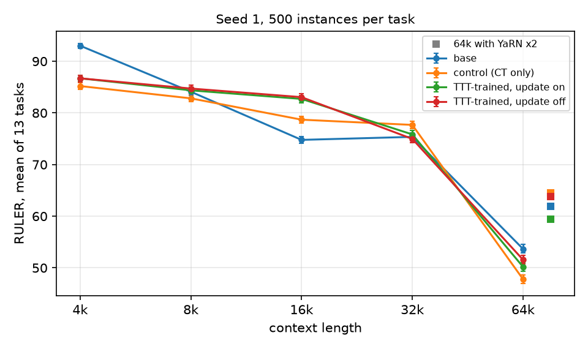
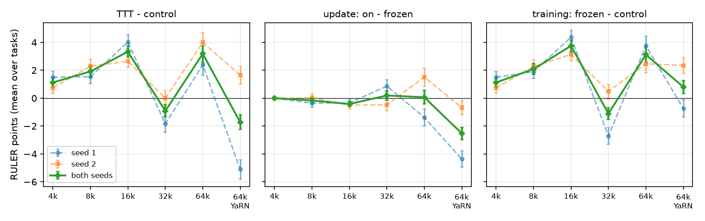
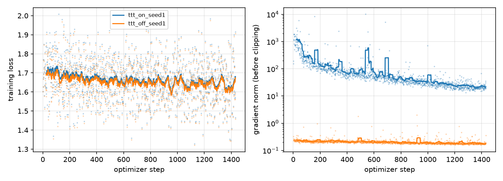
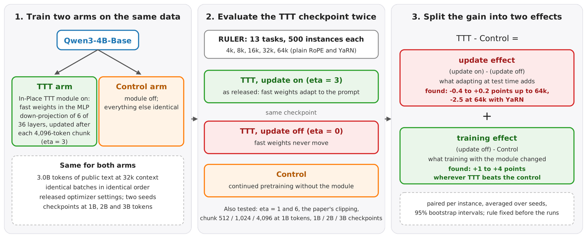

In-Place Test-Time Training on Qwen3-4B
A controlled ablation of the test-time update
Interim report from a research internship at MBZUAI with Dr Salman Khan and Hanoona Rasheed
In-Place TTT lets a language model change some of its own weights while it reads. In one layer out of six, the MLP down-projection becomes a fast weight that takes a small gradient step after a chunk of 4,096 tokens. The published results show long-context gains over a matched control. A TTT model differs from its control in two ways, though. Its shared weights were trained together with the module, and its fast weights adapt at test time.
This study separates the two. I continued pretraining Qwen3-4B-Base with and without the module on identical data, then evaluated the TTT checkpoint a second time with the update switched off. Up to 64k tokens, switching the update off changes the RULER mean by at most 0.4 points. The gains over the control come from training with the module.
Primer: learning while reading
A language model learns during training and then stops. When it reads a new document, its weights stay fixed. It keeps track of earlier text by looking back at it with attention.
Test-time training lets the model keep learning while it reads. The model treats the text in front of it as a small training set. After a stretch of text, it takes one small gradient step on a few of its own weights, called fast weights. It then reads the next stretch with the updated weights.
Think of a student who, after finishing a chapter of a long book, writes a few notes in the margin. The notes are short, and the student reads later chapters with them in mind. Fast weights play the part of those notes.
- Reada chunk of 4,096 tokens
- Pair upthe layer's hidden patterns with targets made from the same text
- Writethe pairs into the fast weight with one gradient step
- Read onwith the updated weight
What gets written
In In-Place TTT the fast weight is the matrix W that turns a layer's hidden pattern into the layer's output. An update adds an outer product of a target and a pattern. That stores an association: when this pattern appears, push the output toward this target.
Later, a similar pattern gets back part of the stored target, and an unrelated pattern gets back very little. The matrix acts as a small memory that is written by gradient steps and read by ordinary computation. Try it below.
The matrix starts empty. Pattern A and target A are shown on its edges. Press pair A to write them in.
A small fast-weight memory. Teal cells are positive and coral cells negative. Writing a pair adds the target times the pattern to the matrix, one row per target value. Reading multiplies the matrix by a pattern. The two stored patterns are at right angles, so reading with one returns its own target and leaves the other alone. The numbers are made up, and a layer in the model works with thousands of dimensions.
In the model, the target comes from the layer's own input: a short causal convolution over recent tokens, passed through a learned projection. No labels are needed, so the model can learn from any text it reads. Whether these notes help is the question of this study. If they do, switching the writing off should cost accuracy.
How the model reads
In-Place TTT edits six of the 36 layers of Qwen3-4B: layers 0, 6, 12, 18, 24 and 30. In those layers the MLP down-projection W becomes a fast weight. The model reads its input in chunks of 4,096 tokens. After a chunk, it forms a target from a causal convolution of the layer input and passes the target through a learned projection P. It then applies one outer-product step, W ← W + η Σt (P⊤ conv(x)t) ht⊤, with inner learning rate η = 3. The next chunk is read with the updated W.
Press play to read a 32k-token input, the training length.
Fast weights on held-out text. Gauges show the measured accumulated change ‖W − W0‖ after the first and the seventh update, on eight held-out 32k sequences. Values in between are interpolated linearly, which matches the near-linear growth the diagnostics found. The matrix tiles are a schematic. With ‖W0‖ between 112 and 126, seven updates move five layers by under 1% and layer 30 by 2.3 to 2.4%. At 4k the whole input fits in one chunk, so no update reaches the text the model reads.
What was tested
The ablation needs two trained models and three evaluations. The arms, the decision rule and the analysis were fixed in a study plan written before the runs.
Results
The training effect accounts for the gains wherever the TTT arm leads the control. With the seeds averaged, the update effect stays within 0.4 points of zero at all lengths up to 64k with plain rotary embeddings. Its sign changes between seeds at 32k and at 64k. With YaRN at 64k, the update costs 2.5 points.
Hover or tap a point for its value and 95% interval.
Differences are paired on the same RULER instances, with 95% bootstrap intervals. Scores are the RULER mean over the 13 tasks. The 11-task set drops two tasks hit by a corpus-design mistake: synthetic retrieval documents in the training data taught both arms to answer some prompts with a new “Question:” block. Both arms share the artifact, and the 11-task results serve as a sensitivity check.
Turning the update up and down
If adapting at test time were the source of the gain, the inner learning rate at inference should matter. These variants of the seed-1 checkpoint change only η at inference.
32k, the training length
64k, plain RoPE
Reading the dial. Big numbers are the 13-task RULER mean, and the bars show the paired difference to the update-off variant with its 95% interval where the report gives one. At 32k the trained rate adds 0.9 points and twice that rate loses 0.8. At 64k any non-zero rate hurts, and the frequent-words task collapses at η = 6. The clipping threshold reported for the method, τ = 10−5, is four to five orders of magnitude below the measured per-chunk changes. Clipping at that value removes the update. With the update off, the same checkpoint lists the three frequent words correctly at 64k with YaRN and scores 93.2 on that task, against 53.7 with the update on.
Chunk size
The released configuration reads chunks of 4,096 tokens, while the original paper's ablation on a smaller model preferred 512 to 1,024. These models were trained for 1B tokens with the three chunk sizes and compared with a control at the same budget, on the 11 tasks without the artifact.
With the update on, chunk 4,096 is the worst of the three sizes. With the update off, the three sizes agree to within 0.4 points at 32k, and all of them lead the 1B control by 7.8 to 9.2 points at 64k. The chunk size therefore sets how much the active update costs, and the 64k advantage over the control is a training effect at this budget too.
How the module changes training
The two arms train in different regimes. On identical batches the TTT arm's loss stays above the control's, by 0.017 nats early in training and by 0.007 at the end. Its gradient norm starts in the hundreds to thousands and falls to 20 to 30, while the control's stays near 0.2. Almost all of that gradient lies in six small target convolutions.
Where the gradient goes. Gradient norms by parameter group on held-out 16k sequences, final seed-1 checkpoint; seed 2 gives 49.15 of 49.16. With the released gradient clipping at 1.0, the whole network's gradient is scaled down by a factor of about 50 at the end of training. The module may act as a regulariser and an optimiser perturbation. Whether the same rescaling without the module would give the same training effect is a question for the next study.
Figures from the report




Limits and next steps
The budget is 3.0B tokens per arm at 32k context, against the original paper's 20B at 32k followed by 15B at 64k. The 64k results therefore test extrapolation beyond the training length. The study covers one model, one benchmark with greedy decoding and two seeds. The learning-rate sweep, the clipping test and the learning curve use seed 1 only, and the chunk ablation stops at 1B tokens.
The natural next experiments are the same ablation at a larger budget and with a 64k training stage. The released code runs them from one configuration file. This text-model study is also the baseline for porting the method to a Qwen vision-language model.
Citation
@techreport{khan2026inplacettt,
title = {In-Place Test-Time Training on {Qwen3-4B}:
A Controlled Ablation of the Test-Time Update},
author = {Khan, Rayhaan},
institution = {Mumbai AI Lab},
type = {Interim report},
year = {2026},
url = {https://github.com/Rayhaan1345/inplace-ttt-study}
}